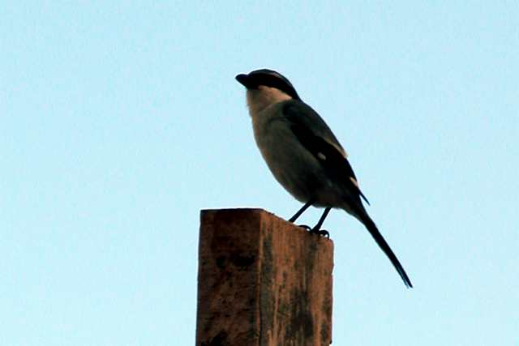

Tuesday, January the 27th, 2009
back to: title, date or indexes
Currently in preparation, The Hooting Yard Encyclopaedia Of Birds will prove, I think, to be a majestic work of birdy scholarship destined to blow the roof off the pretty little hut of contemporary ornithology. Apart from anything else, it will include stuff about dozens of birds other avianists don't even know exist, such as the lopwit. As a brief taster, here is part of the entry on the great grey shrike:

The Latin name of the great grey shrike, Lanius excubitor, translates into English as butcher sentinel. Whenever this bird is hereafter mentioned in Hooting Yard, that is what it will be called, as in the sentence “Oh look,” said Dobson, taking a pause from hammering a nail into a plank to no apparent purpose, “There is a butcher sentinel singing its little heart out atop that wooden pale.”